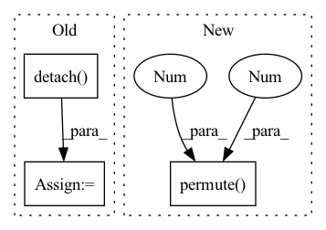

Pattern ID :2834
Before Change
mask = rolloutDistribution.sample((h*w, n, 1)).bool()
mixed = mask * encoderIn.detach() + torch.logical_not(mask) * quantized
// [h*w, n, c] -> [n, c, h*w] -> [n, c, h, w]
deTransformed = self._decoder(mixed, quantized).permute(1, 2, 0).reshape(n, c, h, w)After Change
// deTransformed = self._dePosition(deTransformed).permute(2, 3, 0, 1)
// [n, c, h, w]
quantizeds.append(deTransformed)
codes.append(sample.argmax(-1).permute(1 , 0 ) .reshape(n, h, w))
logits.append(logit.reshape(n, h, w, k))
return quantizeds, codes, logits
In pattern: SUPERPATTERN
Frequency: 3
Non-data size: 3
Instances Fragment ID: 9349534
Project Name: xiaosu-zhu/mcquic
Commit Name: 9ae00aa713a7cceced00a542585cd202f4481ffb
Time: 2021-01-30
Author: xiaosu.zhu@outlook.com
File Name: src/mcqc/models/quantizer.py
M Class Name: TransformerQuantizer
N Class Name: TransformerQuantizer
M Method Name: forward(5)
N Method Name: forward(5)
M Parent Class: nn.Module
N Parent Class: nn.Module
M File Name: src/mcqc/models/quantizer.py
N File Name: src/mcqc/models/quantizer.py
M Start Line: 271
M End Line: 310
N Start Line: 276
N End Line: 316
Before Change
neg = dists + 1e5 * pos_mask.float()
neg_weight = (self.neg_margin - neg).detach()
neg_weight = torch.max(torch.zeros_like(neg_weight), neg_weight)
lse_negative = torch.logsumexp(self.log_scale * (self.neg_margin - neg) * neg_weight, dim=-1)
loss = F.softplus(lse_positive + lse_negative) / self.log_scaleAfter Change
def forward(self, anchor, positive, dist_keypts):
pids = torch.FloatTensor(np.arange(len(anchor))).to(anchor.device)
// dists = cdist(anchor, positive, metric=self.metric)
dists = torch.matmul(anchor, positive.permute(1 ,0 ) )
// add 10 to false negative
// dist_keypts = np.eye(dist_keypts.shape[0]) * 10 + dist_keypts.detach().cpu().numpy()
// add_matrix = torch.zeros_like(dists) Fragment ID: 9349519
Project Name: xuyangbai/d3feat.pytorch
Commit Name: f19b93196387b22f1cb416f9a0214b2cffaf8e5e
Time: 2020-07-16
Author: 653823597@qq.com
File Name: utils/loss.py
M Class Name: CircleLoss
N Class Name: CircleLoss
M Method Name: forward(4)
N Method Name: forward(4)
M Parent Class: nn.Module
N Parent Class: nn.Module
M File Name: utils/loss.py
N File Name: utils/loss.py
M Start Line: 123
M End Line: 152
N Start Line: 125
N End Line: 157
Before Change
n, c, h, w = xRaw.shape
// [n, c, h, w] -> [h, w, n, c]
*************** TODO: NEED DETACH? *******************
encoderIn = xRaw.detach() .permute(2, 3, 0, 1)
// encoderIn = xRaw.permute(2, 3, 0, 1)
// [h, w, n, c] -> [h*w, n, c]
if False:
encoderIn = self._position(encoderIn).reshape(-1, n, c)
// encoderIn = encoderIn.reshape(-1, n, c)
// [h*w, n, c]
x = self._encoder(encoderIn)
else:
x = encoderIn.reshape(-1, n ,c)
// similar to scaled dot-product attention
// [h*w, N, Cin], M * [h*w, n, k]
quantized, samples, logits = self._attention(x, temp, True)After Change
// [n, c, h, w]
quantizeds.append(deTransformed)
codes.append(sample.argmax(-1).permute(1, 0).reshape(n, h, w))
logits.append(logit.permute(1 , 0 , 2) .reshape(n, h, w, k))
return quantizeds, codes, logits
Fragment ID: 9349498
Project Name: xiaosu-zhu/mcquic
Commit Name: a4a40624c11a9779699f4a37cccb5b5ed8bc5048
Time: 2021-04-10
Author: xiaosu.zhu@outlook.com
File Name: src/mcqc/models/quantizer.py
M Class Name: TransformerQuantizer
N Class Name: TransformerQuantizer
M Method Name: forward(3)
N Method Name: forward(3)
M Parent Class: nn.Module
N Parent Class: nn.Module
M File Name: src/mcqc/models/quantizer.py
N File Name: src/mcqc/models/quantizer.py
M Start Line: 271
M End Line: 298
N Start Line: 504
N End Line: 534